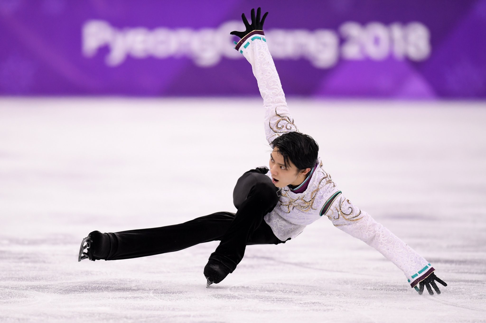
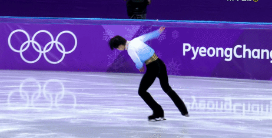
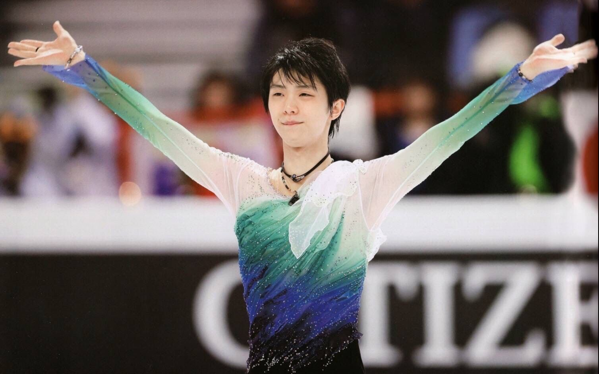
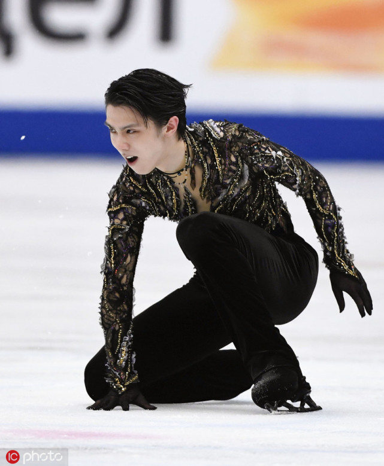

世界上最著名最有影响力的体育赛事，冬季项目有冬季奥林匹克运动会（Olympic Winter Games，简称OWG），冬奥会和夏奥会一样，四年一届，2022年北京即将举行第24届冬奥会了。
摘自ISU官网：The Olympic Winter Games is a major international sporting event that occurs once every four years. The first Olympic Winter Games took place in 1924 in Chamonix (FRA).
Figure Skating and Speed Skating were part of the original five Olympic Winter sports although Figure Skating also featured in the 1908 Olympic Games (summer) in London (GBR).
以2018平昌冬奥会为例，花样滑冰项目设有女子单人滑（Ladies Single Skating），男子单人滑（Men Single Skating），双人滑（Pair Skating），冰舞（Ice Dance），团体赛（Team Event）五个项目。
点击图片查看羽生结弦2018年平昌冬奥长节目《SEIMEI》👆。
平昌冬奥会男单和女单都各有30名选手参赛，双人滑有22对选手，冰舞有24对选手，团体赛有10支参赛队伍。在短节目/短舞蹈后，男单和女单各有24名选手，双人滑16对选手，冰舞20对选手晋级自由滑/自由舞，在自由滑/自由舞比赛结束后，将短节目分数和自由滑分数相加，按总分决定最终名次。
年龄条件：参加平昌冬奥会的运动员在2017年7月1日至少要年满15周岁。
成绩条件：达到最低参赛分数。
名额：每个国家每个单项最多只能有3位/对选手参赛，名额的取得与上一赛季的世锦赛结果相关。
团体赛以国家为单位，共10支参赛队伍，每支参赛队伍先派出选手进行短节目/短舞蹈的比赛，每位/对选手根据比赛名次获得相应积分，第一名获得10分，第二名9分，以此类推，将四个项目取得的积分相加，前五名的队伍晋级自由滑/自由舞的比赛，自由滑/自由舞的比赛也是按选手名次获得积分，最后按总积分决定团体赛的名次。
团体赛是从2014索契冬奥会开始设立的，在四个单项开始前先进行团体的角逐。花滑作为一项运动，在美的同时也非常消耗体力，如果选手同时参加团体赛的短节目和自由滑，再参加自己的单项，间隔时间短，选手可能来不及完全恢复，选手的状态也有峰值，要在团体赛和个人单项都有最好的表现不是件容易的事。不过提前比团体赛，可以感受奥运的气氛，熟悉场地，如果发挥好的话也许可以增强信心，但如果没发挥好，也可能会给选手的精神状态造成不好的影响，对后面的单项不利。也许还是因人而异吧，不过连续比团体又比单项还是辛苦选手了。
团体赛的四个项目并不是说必须要一位/对选手比完短节目和自由滑，团体在晋级自由滑比赛后如果有条件的话可以派遣与短节目不同的选手进行比赛。有一定实力但又难以在团体赛挣得奖牌的团队可能会让有竞争力的选手参加短节目的比赛，获得好的排名以便团队能够晋级自由滑，在自由滑阶段改派其他选手参赛。不过对于整体实力很强的团队，为了瞄准最高点就会组成一支很强的队伍。例如平昌冬奥会的加拿大队，只在女单的短节目和自由滑派遣了不同选手，男单、双人、冰舞都派出了自己最强的选手，共同赢得了宝贵的金牌，而在后面的单项比赛中选手们也有上佳表现，冰舞在单项获得了冠军，双人获得了铜牌。
点击图片查看羽生结弦2018年平昌冬奥短节目《肖邦第一叙事曲》👆。
大奖赛系列赛事由六站分站赛（Grand Prix of Figure Skating即GP）和最后的总决赛（Grand Prix of Figure Skating Final即GPF）组成，分站赛从十月开始，六站分站赛结束后，每个项目积分最高的六位/对选手晋级总决赛。
摘自ISU官网：The ISU Grand Prix of Figure Skating Series started in 1995 (previously known as the ISU Champions Series) and consists of six international senior invitational events and the ISU Grand Prix of Figure Skating Final.
The skaters are seeded and invited to the six Grand Prix of Figure Skating events based on the results of the previous ISU World Figure Skating Championships. Competitors collect points in their Grand Prix events towards the qualification for the ISU Grand Prix of Figure Skating Final.
Only the top six Skaters/ Couples in each discipline can qualify for the Final.
每位选手最多只能参加两站GP。有的选手可以参加两站，有的选手只有一站，还有的选手一站都没有，这与规则有关。
在上赛季的世锦赛中每个项目排名前六名的选手将作为种子选手，每人参加两站分站赛。种子选手如果因故退出某一个分站赛，也不会再被分配到其他的分站赛中。种子选手选站有规则也有惯例，名次高的选手优先选站，要考虑自己也要考虑其他种子选手的选站方便，避免造成其他种子选手离开本土分站或者背靠背参赛之类的。
在世锦赛中排名7-12位的选手（双人和冰舞7-10），只要分数高于大奖赛参赛的最低分数线，就可以参加两站分站赛。
Skaters who have placed 7 – 12 in Men and Ladies and Pairs/Couples who have placed 7 – 10 in Pair Skating and Ice Dance at the ISU World Figure Skating Championships 2018 will be guaranteed to be selected for two ISU Grand Prix of Figure Skating events, provided that these Skaters/Couples fulfil the requirements of the minimum Grand Prix score as per paragraph 2.3. below.
赛季结束后世界排名1-24位的选手，以及虽然排名低于24位，但赛季最好成绩在前24以内的选手，可以参加一站分站赛。
Skaters/Couples with an ISU World Standing placement of 1 – 24 (after season 2017/18) and Skaters/Couples with seasons best scores in the top 24 (for season 2017/18) who do not hold an ISU World Standing placement of 1 – 24 will be guaranteed one (1) event if they do not otherwise meet the criteria listed in paragraphs 2.1 or 2.2 above and the minimum Grand Prix score.
世青赛奖牌选手和JGPF第一名如果升入成年组的话，也可以获得选站。
Medallists from the ISU World Junior Figure Skating Championships 2018 and the gold medallists from the ISU Junior Grand Prix of Figure Skating Final 2017/18 will be included in the selection process.
承办分站赛的会员协会，每个项目最多可以选派三名/对选手参赛。
A maximum of three (3) Skaters/Couples in each discipline from the Organizing ISU Member may skate in the Organizing ISU Member’s event.
如果大奖赛分站赛还有剩余参赛席位，承办的会员协会可以邀请赛季最佳成绩75以内的任何选手来参赛。
If any entries remains open and if all Skaters/Couples as defined in paragraph 2.2. a), b) and c) above have been selected for one (1) event, the Organizing ISU Member may select any Skater/Couple with a top 75 seasonal best score to fill the open entries.
分站赛参赛人数为：
单人滑：不超过12名，不低于8名
双人滑：不超过8对，不低于6对
冰舞：不超过10对，不低于8对
The maximum number of entries per event, however, is set as follows:
Men and Ladies not more than 12 but not less than 8 entries
Pair Skating not more than 8 but not less than 6 entries
Ice Dance not more than 10 but not less than 8 entries
分站赛每个会员协会在每个单项上最多只能有三位/对选手参赛。
A maximum of three Skaters/Couples from the same ISU Member may compete in the same discipline of any individual event of the ISU Grand Prix of Figure Skating.
参赛选手必须要在2017年7月1日至2018年6月20日期间举办的世锦赛、大奖赛、挑战赛中的分数达到ISU规定的最低分数以上，才能获得18/19赛季大奖赛的参赛资格。
从观众的角度看，各个分站赛的竞争可能并不是非常的激烈，但能够参加分站的选手都是世界上优秀的选手了，虽然并不是所有的选手都有实力进行奖牌的争夺。对于一些选手来讲，能获得参赛机会就非常难能可贵了，有的选手好不容易获得了GP的参赛机会，因为不想错过，虽然有严重的伤病，但还是坚持完成比赛才去治疗，也许成绩并不理想，但能够参赛本身对选手来说就是最为重要的事情了。
选手根据在分站赛的名次获得相应积分，分站第一名15分；第二名13分；第三名11分，以此类推。六站分站结束后，积分最高的前六名选手进入总决赛GPF。积分相同的情况下，分站赛名次高的排名在前；分站名次相同，两站总分高的排名在前。
如果某个会员协会在某一个项目上实力雄厚，则可能有很多位选手参加大奖赛分站赛，GPF不像锦标赛那样对每个国家的参赛名额有限制，所以最后进入总决赛的选手可能会有三名以上都来自同一个国家。
大奖赛总决赛只有6人参加，参赛选手必须在两站都有不错的发挥才可以，但是花滑这个运动因为很容易有失误，如果某一站发挥不佳，或是在赛季中遭遇伤病，都可能无缘总决赛，有些选手具有在锦标赛上争夺奖牌的实力，但也可能因为状态问题未能进入GPF，这样看GPF整体竞争的激烈程度有可能不如锦标赛，不过能进入GPF本身就是实力的象征，人数虽少，但精彩程度却很高。
关于大奖赛的详细信息，具体的名额分配规则、分数、排名等等都可以在ISU官网查看：https://www.isu.org/figure-skating/events/grand-prix-of-figure-skating
引自ISU官网：The Challenger Series in Figure Skating is a series of International Figure Skating (Senior) Competitions as an opportunity for many Skaters to get prepared for qualifying and competing in ISU Championships. The series is financially supported by the ISU in accordance with conditions annually decided by the Council and published through an ISU Communication.
大奖赛和锦标赛的参赛名额有限，很多选手无法参加，不过可以参加挑战赛系列赛事（Challenger Series in Figure Skating 即CS），在挑战赛获得的成绩一样被ISU认可，挑战赛可以让更多的选手参与比赛，也可以帮助选手调整状态，获得积分，刷新自己的最好成绩，在挑战赛上如果能比出排进赛季前24的好成绩，一样可以为自己争取到下赛季大奖赛分站赛的参赛机会。很多高水平选手会在GP开始前选择参加一场挑战赛，通过比赛来检验新节目，调整自己的状态。
大奖赛和锦标赛的参赛名额有限，很多选手无法参加，不过可以参加挑战赛系列赛事（Challenger Series in Figure Skating 即CS），在挑战赛获得的成绩一样被ISU认可，挑战赛可以让更多的选手参与比赛，也可以帮助选手调整状态，获得积分，刷新自己的最好成绩，在挑战赛上如果能比出排进赛季前24的好成绩，一样可以为自己争取到下赛季大奖赛分站赛的参赛机会。很多高水平选手会在GP开始前选择参加一场挑战赛，通过比赛来检验新节目，调整自己的状态。
挑战赛系列赛事更多信息可以在这里查看：https://www.isu.org/figure-skating/events/challenger-series
锦标赛有欧锦赛、四大洲、世锦赛。
欧洲花样滑冰锦标赛European Figure Skating Championships（欧锦赛、EC）的参赛选手都是来自于欧洲的ISU会员协会。
四大洲花样滑冰锦标赛Four Continents Figure Skating Championships（四大洲、FC、4CC）的参赛选手都是来自于欧洲以外的四大洲，即亚洲、非洲、美洲、大洋洲。
世界花样滑冰锦标赛World Figure Skating Championships（世锦赛、WC），非奥运赛季中最为重大的比赛就是世锦赛了，所有ISU会员协会都可以参与。
每个会员协会只要有选手能达到最低参赛分数要求，每个项目都至少可以报名一位/对选手。
有的会员协会可以在一个单项上派遣二位/对甚至三位/对选手参赛，这就涉及多名额的取得。
每个会员协会的锦标赛参赛名额与上一年度在该锦标赛中取得的成绩有关，如果上赛季参加了某个单项，参赛选手的名次将决定下个赛季该会员协会参赛选手的人数。选手参与了最初的抽签将被认为是参赛。
参加短节目/韵律舞但未能晋级自由滑/自由舞的选手，单人滑选手将得到18分，双人滑和冰舞得到的分数等同其短节目/韵律舞的排名（如果排名低于18，也按18分计算）。晋级自由滑/自由舞的选手的得分按其最终获得的名次确定，如果名次低于16名，按16分计算。
如果在一个单项上有三名选手参赛，只取成绩最好的两名选手计算分数。
按照前述方式计算出的每个选手的得分，将决定下个赛季的名额：
如果某个会员协会在某个单项上只有一名选手参赛，按上述方式计算其得分不超过2分，则下赛季可以获得三个名额，得分不超过10分，则下个赛季可以有两个名额；
如果某个会员协会在某个单项上有两名选手参赛，两名选手所得分数之和不超过13分，则下赛季可以获得3个名额，不超过28分，可以获得两个名额；如果有3位选手参赛，只取成绩最好的两名选手对应分数之和，名额计算方式和2人参赛一致。
不过四大洲的参赛名额是开放的，每个会员协会都可以派三名/对选手选手参赛，只要能够达到ISU规定的最低参赛分数。
锦标赛的成绩关系着下个赛季的参赛名额，选手取得成绩不仅是为了自己，虽然并没有团体一说，但也带了一些团体的色彩，选手会因为自己的失误而自责不已，相比于其他赛事，选手多背负了一份责任。
除去国际赛，很多国家还设有各种国内赛，国内的冬季运动会，国内青年组、成年组的全国赛事等等，有些国家在某个单项上有强劲的实力的话，其全国赛的激烈程度可能并不亚于国际赛事，受关注比较多的国内赛有俄罗斯、美国、加拿大、日本等。国内的全国性赛事一般在大奖赛系列赛事结束后的12月底至1月初进行，全国赛的结果将关系着赛季后半的比赛，尤其是ISU锦标赛（欧锦、四大洲、世锦赛）的派遣，对于本国选手来说非常关键，在全国赛上取得优异的成绩才能有机会走上国际赛场。
花滑比赛基本上在秋天开始，到春天结束，选手在一个赛季中的全部比赛都结束后，就进入了休赛期。没有了紧张的比赛，休赛期选手调整状态，准备下个赛季的节目，参加冰演等等。虽然没有比赛可以看，不过休赛期的冰演很多，有很多在比赛中看不到的节目，有的选手会在休赛期的商演上披露下个赛季的新节目，让大家先睹为快。如果喜欢看表演，休赛期的冰演也是不容错过。
在一个赛季里选手往往要参加好多场比赛，花滑这个项目有很多外在因素会影响到选手的比赛发挥，选手自身也会面临伤病、整体状态的起伏、临场状态等因素的影响。赛季之初选手更换了新的节目，新的音乐、新的编舞、新的动作安排，都需要有足够的时间来磨合，也许在最初并不是很被看好的节目到赛季中后期会变得好看起来。很多选手们都在提高难度，虽然跳成了的四周很好看，但跳跃本身是很容易失误的，任何选手也做不到场场都完美发挥，综合看起来，一个赛季里选手做到无失误的场次会非常有限，这是正常现象。选手在训练和生活中可能会面临各种问题，作为观众对于选手的真实状况其实是完全不了解的，无论选手发生了什么情况，我觉得作为观众还是保持尊重和体谅的心情会比较好，毕竟花滑对于选手的重要意义以及选手对于花滑的热爱程度，都是观众所无法比拟的。